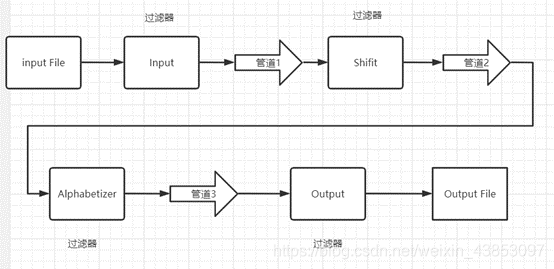

管道-过滤
管道-过滤（Pipeline-Filter）软件体系结构是一种常见的软件架构模式
它将一个大型任务分解为一系列小的、独立的处理步骤，每个步骤都是一个过滤器（Filter），并且这些过滤器通过管道（Pipeline）相互连接起来。
在管道-过滤架构中，数据流经过一系列过滤器，每个过滤器都对数据进行特定的处理，然后将处理后的结果传递给下一个过滤器。整个过程就像流水线上的工厂生产一样，每个工人都负责自己的工作，最终完成产品的加工和生产。
管道-过滤（Pipeline-Filter）软件体系结构是一种常见的软件架构模式
它将一个大型任务分解为一系列小的、独立的处理步骤，每个步骤都是一个过滤器（Filter），并且这些过滤器通过管道（Pipeline）相互连接起来。
在管道-过滤架构中，数据流经过一系列过滤器，每个过滤器都对数据进行特定的处理，然后将处理后的结果传递给下一个过滤器。整个过程就像流水线上的工厂生产一样，每个工人都负责自己的工作，最终完成产品的加工和生产。